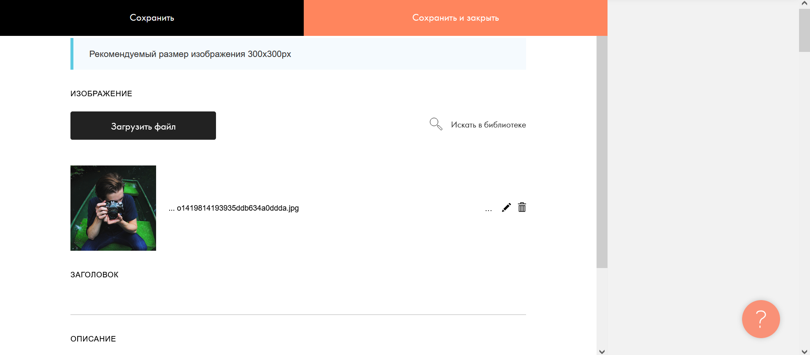
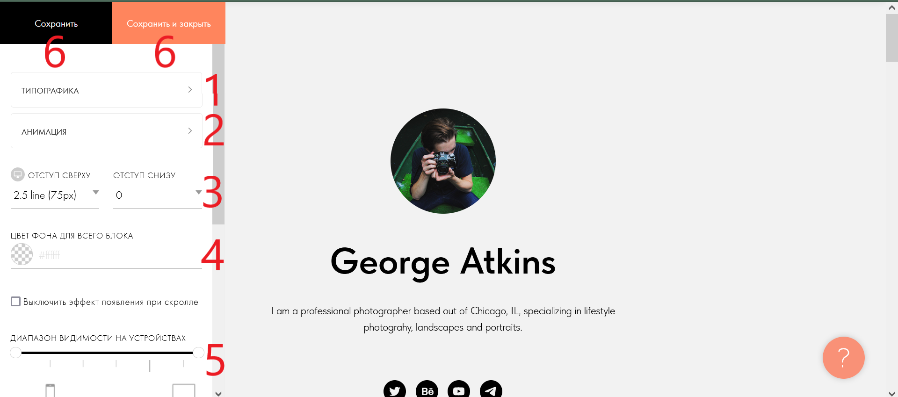

Контент блока

Если вы нажали "контент" в предыдущем окне, то у вас будет это окно. Чтоб изменить фотографию блока нажмите на кнопку "Загрузить файл"(3) для своих фотографий, или кнопку "Искать в библиотеке" (8). Вы можете изменить фото встроеным редактором нажав кнопку(6), или удалить фото нажав на кнопку(8). Ниже в поле "Заголовок" (4) вы можете написать текст, который будет находится над фото. Ещё ниже поле "Описание" (5). Вы можете написать там текст,который будет находится под фото. Что бы сохранить изменения нажмите на кнопку (1) или (2) (Для дальнейших инструкций нажмите на стрелочку в правой области экрана)
Настройка блока(2)

Если вы нажали "Настройки" в блоке, то у вас откроется это окно. В нём вы можете настроить позиционирование элементов в блоке (1) кнопка, наличие анимаций (2) кнопка, цвет всего блока(4), отступы внутри блока(3), на каком устройстве будет виден блок(5), а также можно сохранить изменения(6) .(Для дальнейших инструкций прокрутите вверх, и нажмите на стрелочку в правой области экрана)